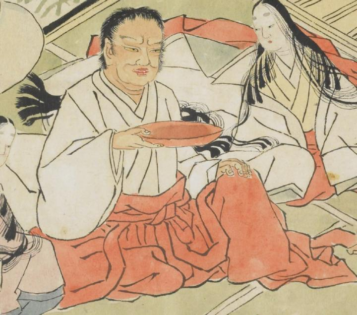

大きな顔をしており、黄色い目をしている。白い襦袢に、赤い袴をはいている。手には大きな酒盃をもち、赤い顔をしている。左右にはふたりの女性がいる。
出典：親書誌：U426_nichibunken_0079：酒天童子絵巻；シュテンドウジエマキ／日付：2006／資源識別子：U426_nichibunken_0079_0005_0004
Copyright (c)2010- International Research Center for Japanese Studies, Kyoto, Japan. All rights reserved.